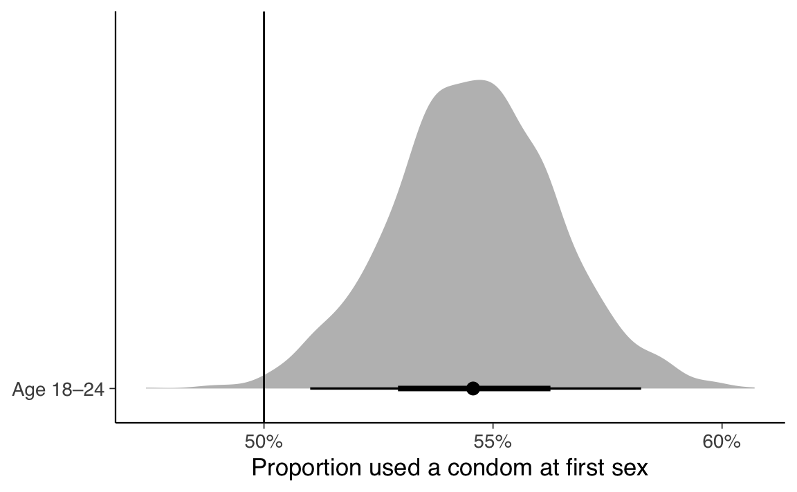
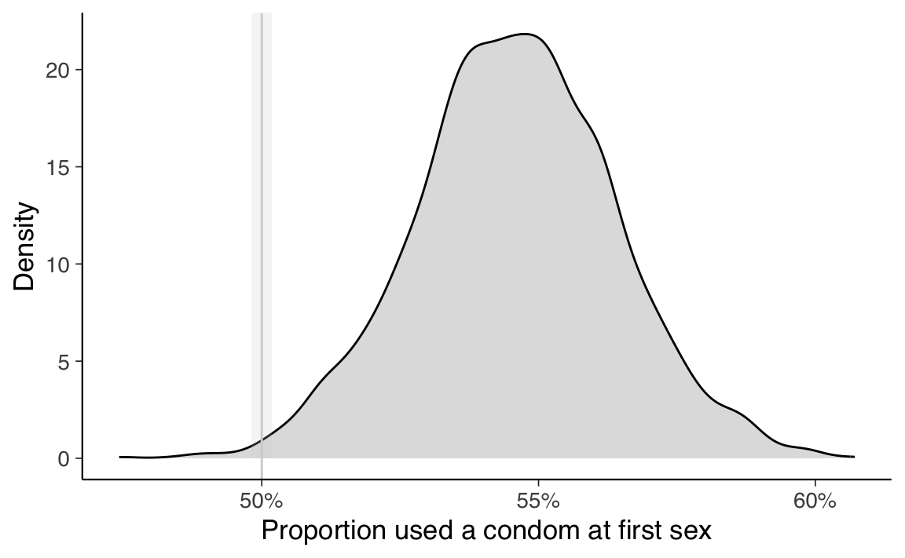
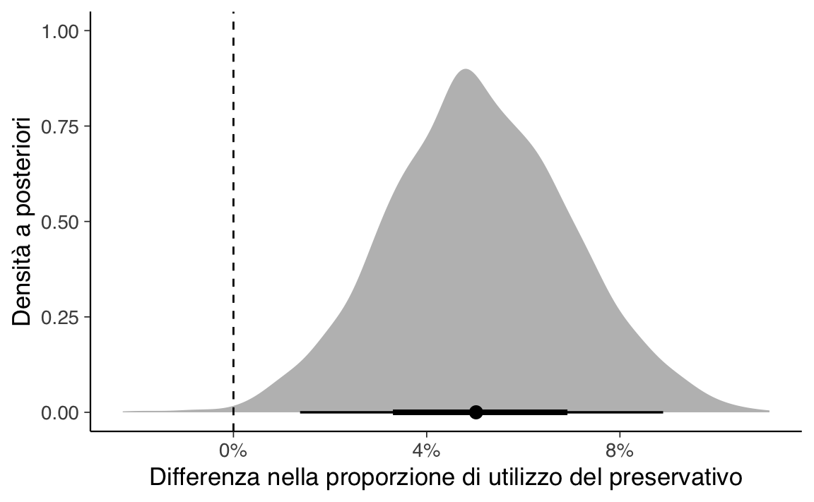

here::here("code", "_common.R") |>
source()
# Load packages
if (!requireNamespace("pacman")) install.packages("pacman")
pacman::p_load(cmdstanr, posterior, bayestestR, brms, tidyr, broom, tidybayes)66 Inferenza sulle proporzioni
In questo capitolo imparerai a
- effettuare inferenza sulle proporzioni utilizzando un modello bayesiano;
- applicare il concetto di ROPE (Region of Practical Equivalence) per interpretare i risultati.
Prerequisiti
- Leggere il capitolo Learning about a Binomial Probability del testo di Albert & Hu (2019).
Preparazione del Notebook
66.1 Introduzione
In questo capitolo esploreremo come affrontare il problema dell’inferenza su una proporzione o sul confronto tra due proporzioni utilizzando un approccio bayesiano. Per tale scopo, utilizzeremo il pacchetto brms in R. L’approccio bayesiano ci permette di ottenere una distribuzione completa della probabilità a posteriori del parametro di interesse, offrendo una visione più ricca e flessibile rispetto all’approccio frequentista tradizionale.
66.2 Inferenza su Una Proporzione
66.2.1 Contesto e Dati
Come esempio per l’inferenza su una proporzione, utilizzeremo i dati dello studio di Brückner & Bearman (2005), discussi anche da Wagenmakers et al. (2010). Nell’articolo “After the promise: the STD consequences of adolescent virginity pledges”, Brückner & Bearman (2005) analizzano una serie di interviste condotte nell’ambito del National Longitudinal Study of Adolescent Health (Add Health). Lo studio si concentra sul comportamento sessuale di adolescenti, di età compresa tra 18 e 24 anni, che hanno fatto un “virginity pledge”, ovvero una promessa pubblica o scritta di rimanere vergini fino al matrimonio. Studi scientifici indicano che il comportamento sessuale di questi adolescenti non sia statisticamente diverso da quello di chi non ha fatto tale promessa, con l’unica eccezione che i “pledgers” hanno una minore probabilità di utilizzare il preservativo durante il primo rapporto sessuale.
I dati rilevanti per la nostra analisi sono i seguenti:
- su 777 adolescenti che hanno fatto il “virginity pledge”, 424 (54.6%) hanno dichiarato di aver usato il preservativo durante il primo rapporto sessuale;
- su 9072 adolescenti che non hanno fatto la promessa, 5416 (59.7%) hanno dichiarato di aver usato il preservativo.
66.2.2 Obiettivo dell’Analisi
Nella prima analisi, ci concentreremo sul campione di adolescenti che hanno fatto il “virginity pledge”. Ci chiediamo se sia credibile pensare che questi adolescenti tendano ad avere un rapporto protetto, nel loro primo rapporto sessuale, in una proporzione minore di quella che ci si potrebbe aspettare in caso di casualità (ovvero, una proporzione di 0.5).
66.2.3 Analisi Frequentista
Iniziamo con un test frequentista per confrontare la proporzione osservata con il valore di riferimento 0.5.
prop_test_freq_vol <- prop.test(
x = 424,
n = 777,
p = 0.5
)
tidy(prop_test_freq_vol)
#> # A tibble: 1 × 8
#> estimate statistic p.value parameter conf.low conf.high method
#> <dbl> <dbl> <dbl> <int> <dbl> <dbl> <chr>
#> 1 0.546 6.31 0.0120 1 0.510 0.581 1-sample proporti…
#> # ℹ 1 more variable: alternative <chr>L’intervallo di confidenza frequentista non include il valore di riferimento 0.5, quindi, in base a questa analisi, possiamo concludere che la proporzione osservata (0.546) sia significativamente maggiore del valore atteso in caso di casualità (0.5).
66.2.4 Approccio Bayesiano con brms
Se utilizziamo dei prior non informativi, ci aspettiamo di giungere alla stessa conclusione anche con un approccio bayesiano. Tuttavia, l’approccio bayesiano ci permette di ottenere una distribuzione completa della probabilità a posteriori del parametro di interesse, offrendo una visione più ricca e flessibile rispetto all’approccio frequentista.
66.2.4.1 Preparazione dei Dati
Iniziamo creando un data frame che sarà utilizzato con la funzione brm().
pledge_binomial_df <- tibble(
n_yes = 424,
n_total = 777
)
# tiny data
pledge_binomial_df
#> # A tibble: 1 × 2
#> n_yes n_total
#> <dbl> <dbl>
#> 1 424 77766.2.4.2 Definizione delle Opzioni del Campionatore
Impostiamo alcune opzioni globali per il campionatore Stan.
# Set some global Stan options
CHAINS <- 4
ITER <- 2000
WARMUP <- 1000
BAYES_SEED <- 123466.2.4.3 Modello Bayesiano
Utilizziamo un modello di regressione con una funzione link binomiale. Questo significa che stimeremo la proporzione \(p\) con un modello di regressione beta-binomiale bayesiano utilizzando brms. Useremo un prior non informativo \(\mathcal{Beta}(1, 1)\). Questo è un modello solo con intercetta, senza altre covariate, poiché siamo interessati solo alla proporzione sottostante, senza condizionarla su altre variabili.
Il modello può essere rappresentato come segue:
\[ \begin{aligned} y_{\text{condom\_use}} &\sim \mathcal{Binomial}(n, \pi) \\ \pi &= \beta_0 \\ \beta_0 &\sim \mathcal{Beta}(1, 1) \end{aligned} \]
Eseguiamo l’analisi bayesiana.
model_pledge_binomial <- brm(
n_yes | trials(n_total) ~ 1,
data = pledge_binomial_df,
family = binomial(link = "identity"),
prior = c(prior(beta(1, 1), class = "Intercept", lb = 0, ub = 1)),
chains = CHAINS, warmup = WARMUP, iter = ITER, seed = BAYES_SEED,
refresh = 0,
backend = "cmdstanr"
)
#> Running MCMC with 4 sequential chains...
#>
#> Chain 1 finished in 0.0 seconds.
#> Chain 2 finished in 0.0 seconds.
#> Chain 3 finished in 0.0 seconds.
#> Chain 4 finished in 0.0 seconds.
#>
#> All 4 chains finished successfully.
#> Mean chain execution time: 0.0 seconds.
#> Total execution time: 0.6 seconds.66.2.4.4 Risultati del Modello
Poiché questo è un modello di regressione, si comporta come qualsiasi altro modello brms. Il coefficiente per l’intercetta rappresenta la proporzione stimata di adolescenti tra i 18 e i 24 anni che hanno usato il preservativo durante il primo rapporto sessuale nel campione.
summary(model_pledge_binomial)
#> Family: binomial
#> Links: mu = identity
#> Formula: n_yes | trials(n_total) ~ 1
#> Data: pledge_binomial_df (Number of observations: 1)
#> Draws: 4 chains, each with iter = 2000; warmup = 1000; thin = 1;
#> total post-warmup draws = 4000
#>
#> Regression Coefficients:
#> Estimate Est.Error l-95% CI u-95% CI Rhat Bulk_ESS Tail_ESS
#> Intercept 0.55 0.02 0.51 0.58 1.00 1457 1756
#>
#> Draws were sampled using sample(hmc). For each parameter, Bulk_ESS
#> and Tail_ESS are effective sample size measures, and Rhat is the potential
#> scale reduction factor on split chains (at convergence, Rhat = 1).Si noti come l’intervallo di credibilità al 95% riproduce l’intervallo frequentista calcolato in precedenza.
66.2.5 Discussione e Confronto tra Approcci
Confrontiamo ora i risultati ottenuti dai due approcci. L’analisi frequentista ha mostrato che la proporzione osservata (0.546) è significativamente maggiore del valore di riferimento 0.5. L’approccio bayesiano conferma questa conclusione, fornendo una distribuzione completa della probabilità a posteriori per la proporzione π. Uno dei vantaggi dell’approccio bayesiano è la possibilità di incorporare informazioni a priori, se disponibili, migliorando così la robustezza delle inferenze. Inoltre, l’intervallo di credibilità bayesiano fornisce una descrizione più completa della distribuzione dei parametri, consentendo una migliore interpretazione dei risultati.
66.2.6 Modello Beta-Binomiale e Soluzione Analitica
In questo contesto, il problema può essere modellato utilizzando una distribuzione beta-binomiale, per la quale esiste una soluzione analitica per la distribuzione a posteriori. Il modello beta-binomiale è particolarmente adatto quando si lavora con dati binomiali (ad esempio, successi e fallimenti) e si desidera incorporare una distribuzione a priori coniugata per la proporzione \(p\).
66.2.6.1 Contestualizzazione del Modello
Per il gruppo “pledgers”, abbiamo \(y_1\) successi su \(n_1\) prove. Se assumiamo una distribuzione a priori Beta(\(\alpha\), \(\beta\)), la distribuzione a posteriori per la proporzione \(p_1\) sarà anch’essa una distribuzione Beta, data da:
\[ p_1 \mid y_1, n_1 \sim \mathcal{Beta}(\alpha + y_1, \beta + n_1 - y_1) \]
Nel nostro caso specifico, scegliamo una prior non informativa \(\mathcal{Beta}(1, 1)\), che equivale a una distribuzione uniforme sull’intervallo [0, 1]. Questa scelta riflette l’assenza di informazioni pregresse sulla proporzione \(p_1\). Pertanto, la distribuzione a posteriori per il gruppo “pledgers” diventa:
\[ p_1 \mid y_1, n_1 \sim \mathcal{Beta}(1 + 424, 1 + 777 - 424) = \mathcal{Beta}(425, 354) \]
66.2.6.2 Calcolo dell’Intervallo di Credibilità
Utilizziamo R per calcolare l’intervallo di credibilità al 95% basato sulla distribuzione a posteriori derivata analiticamente.
Il risultato ottenuto dall’analisi bayesiana analitica replica quello ottenuto tramite il modello brm() implementato in precedenza. Questo confronto tra approcci ci permette di validare i risultati e dimostra la coerenza tra le tecniche frequentista, bayesiana numerica e bayesiana analitica.
66.2.7 Discussione e Confronto tra Approcci
L’utilizzo della distribuzione beta-binomiale e della soluzione analitica offre diversi vantaggi:
-
Semplicità: La soluzione analitica è spesso più semplice da implementare rispetto ai metodi numerici, come quelli utilizzati in
brms. - Velocità: I calcoli sono generalmente più veloci poiché non richiedono iterazioni o campionamenti.
- Interpretazione: L’uso di distribuzioni coniugate facilita l’interpretazione dei risultati, fornendo direttamente la distribuzione a posteriori senza bisogno di complessi algoritmi di inferenza.
Tuttavia, l’approccio bayesiano numerico tramite brms presenta anche vantaggi significativi:
- Flessibilità: Può gestire modelli più complessi e includere covariate multiple.
- Priori informativi: Permette di incorporare facilmente informazioni a priori, se disponibili.
- Estensioni: Facilita l’estensione del modello a casi più complessi, come il confronto tra proporzioni di due gruppi.
66.2.7.1 Analisi della Distribuzione a Posteriori
Essendo un’analisi bayesiana, possiamo lavorare con l’intera distribuzione a posteriori e calcolare direttamente l’estimando, come la differenza tra la proporzione campionaria e la proporzione di riferimento (0.5).
pledge_draws <- model_pledge_binomial |>
spread_draws(b_Intercept) |>
mutate(diff = b_Intercept - 0.5)Visualizziamo la distribuzione a posteriori della proporzione.
p1 <- ggplot(pledge_draws, aes(x = b_Intercept, y = "Age 18–24")) +
stat_halfeye(fill = "gray") +
geom_vline(xintercept = 0.5) +
scale_x_continuous(labels = label_percent()) +
coord_cartesian(ylim = c(1.5, 1.5)) +
labs(x = "Proportion used a condom at first sex", y = NULL)
p1
Il valore di riferimento (0.5) non è incluso nella distribuzione a posteriori, il che significa che la differenza tra la proporzione campionaria e la proporzione di riferimento non include lo zero, con un livello di credibilità del 95%. Possiamo quindi concludere, con un livello soggettivo di credibilità del 95%, che l’uso del preservativo durante il primo rapporto sessuale sia maggiore del caso, per gli adolescenti che hanno fatto il “virginity pledge”.
66.2.8 La Regione di Equivalenza Pratica (ROPE)
L’analisi precedente confronta la proporzione osservata con un singolo valore di riferimento (0.5). Un approccio alternativo è considerare un intervallo di valori attorno a 0.5 che possano essere considerati “praticamente equivalenti” al valore di riferimento. Questo intervallo è chiamato Regione di Equivalenza Pratica (ROPE).
Secondo Kruschke & Liddell (2018), la ROPE può essere definita come un intervallo attorno al valore nullo (baseline) che corrisponde a un decimo della deviazione standard della distribuzione a posteriori del parametro di interesse. Nel nostro caso, il parametro di interesse è la proporzione \(p\), e il valore nullo è 0.5. Per calcolare la ROPE, estraiamo i campioni a posteriori dal modello.
posterior_samples <- as_draws_df(model_pledge_binomial)Calcoliamo la deviazione standard a posteriori di \(p\).
posterior_std_dev <- sd(posterior_samples$b_Intercept)
posterior_std_dev
#> [1] 0.01809Definiamo la ROPE come un intervallo attorno al valore di riferimento 0.5.
baseline <- 0.5 # Valore nullo (baseline)
rope_low <- baseline - 0.1 * posterior_std_dev
rope_high <- baseline + 0.1 * posterior_std_devCalcoliamo ora la probabilità che la proporzione \(p\) si trovi all’interno della ROPE.
rope_probability <-
mean(
posterior_samples$b_Intercept >= rope_low &
posterior_samples$b_Intercept <= rope_high
)
rope_probability
#> [1] 0.00325Visualizziamo la distribuzione a posteriori di \(p\) insieme alla ROPE.
ggplot(posterior_samples, aes(x = b_Intercept)) +
geom_density(fill = "gray", alpha = 0.5) +
annotate(
geom = "rect",
xmin = rope_low,
xmax = rope_high,
ymin = 0, ymax = Inf,
fill = "lightgray", alpha = 0.2
) +
geom_vline(xintercept = baseline, color = "lightgray") +
scale_x_continuous(labels = scales::percent) +
labs(x = "Proportion used a condom at first sex", y = "Density")
In conclusione, dato che solo lo 0.325% (meno dell’uno per cento) della distribuzione a posteriori di \(p\) si trova nella ROPE, possiamo concludere che ci sono evidenze credibili che la distribuzione a posteriori del parametro \(p\) (la proporzione di adolescenti, di età compresa tra 18 e 24 anni, che hanno fatto il “virginity pledge” e hanno usato il preservativo durante il primo rapporto sessuale) sia diversa dal valore di riferimento 0.5. Nel caso specifico, questa proporzione è più alta, indicando che la tendenza ad avere un rapporto protetto è maggiore rispetto al caso di casualità, per questa popolazione.
66.2.8.1 Discussione sulla ROPE
L’utilizzo della ROPE offre una prospettiva aggiuntiva e importante nell’interpretazione delle inferenze bayesiane. Invece di semplicemente determinare se un parametro è statisticamente significativo rispetto a un valore di riferimento, la ROPE permette di valutare se le differenze osservate siano praticamente rilevanti o significative in termini di impatto reale.
- Soglia di Rilevanza: L’impostazione di una ROPE consente di stabilire una soglia di rilevanza pratica. Se la maggior parte della distribuzione a posteriori cade al di fuori della ROPE, possiamo concludere che la differenza è non solo statistica ma anche pratica.
- Interpretazione Clinica: Nelle applicazioni pratiche, come in ambito medico o sociale, la ROPE aiuta a distinguere tra risultati statisticamente significativi ma clinicamente insignificanti e quelli che hanno un impatto rilevante.
Nel contesto dello studio sui “pledgers”, l’uso della ROPE fornisce una valutazione più completa della tendenza degli adolescenti a utilizzare il preservativo durante il primo rapporto sessuale, dimostrando che questa tendenza è non solo statisticamente diversa dal caso di casualità, ma anche significativa dal punto di vista pratico.
66.3 Inferenza sulla Differenza tra Due Proporzioni
Estendiamo ora l’analisi precedente per confrontare le proporzioni di due gruppi, un compito per il quale non esiste una soluzione analitica semplice. Nello studio in esame, ci poniamo la domanda: Fino a che punto l’analisi statistica supporta l’ipotesi che i “pledgers” abbiano una minore probabilità rispetto ai “non-pledgers” di usare il preservativo durante il primo rapporto sessuale?
Per testare questa ipotesi utilizzando brms, estendiamo il modello bayesiano includendo due gruppi: i pledgers (che hanno fatto il voto di astinenza) e i non-pledgers (che non lo hanno fatto). L’obiettivo è stimare la differenza tra le due proporzioni e valutare se questa sia credibilmente diversa da zero.
66.3.1 Creazione del Dataset
Costruiamo un tibble con i dati relativi ai due gruppi:
pledge_data <- tibble(
group = c("pledgers", "nonpledgers"),
n_yes = c(424, 5416), # Numero di partecipanti che hanno usato il preservativo
n_total = c(777, 9072) # Totale dei partecipanti per ciascun gruppo
)
print(pledge_data)
#> # A tibble: 2 × 3
#> group n_yes n_total
#> <chr> <dbl> <dbl>
#> 1 pledgers 424 777
#> 2 nonpledgers 5416 907266.3.2 Specifica del Modello Bayesiano
Utilizziamo un modello binomiale con un predittore categorico per distinguere tra i due gruppi. Il modello può essere rappresentato come:
\[ p_i \sim \text{Binomiale}(n_i, \theta_i) \]
dove \(\theta_i\) è la proporzione di utilizzo del preservativo nel gruppo \(i\), e modelliamo la probabilità di successo come:
\[ \theta = \beta_0 + \beta_1 \cdot \text{group} \]
dove: - \(\beta_0\) rappresenta la proporzione di non-pledgers che usano il preservativo. - \(\beta_1\) rappresenta la differenza tra pledgers e non-pledgers (cioè la variazione della proporzione di utilizzo del preservativo associata all’appartenenza al gruppo dei pledgers).
Stimiamo il modello in brms utilizzando una distribuzione binomiale e un link identità:
model_pledge_diff <- brm(
n_yes | trials(n_total) ~ group,
data = pledge_data,
family = binomial(link = "identity"),
prior = c(
prior(beta(1, 1), class = "Intercept", lb = 0, ub = 1),
# Prior per la proporzione nei non-pledgers
prior(normal(0, 1), class = "b") # Prior per la differenza tra gruppi
),
chains = CHAINS, warmup = WARMUP, iter = ITER, seed = BAYES_SEED,
refresh = 0,
backend = "cmdstanr"
)
#> Running MCMC with 4 sequential chains...
#>
#> Chain 1 finished in 0.1 seconds.
#> Chain 2 finished in 0.0 seconds.
#> Chain 3 finished in 0.1 seconds.
#> Chain 4 finished in 0.0 seconds.
#>
#> All 4 chains finished successfully.
#> Mean chain execution time: 0.1 seconds.
#> Total execution time: 0.8 seconds.66.3.3 Analisi della Distribuzione A Posteriori
Esaminiamo il sommario del modello per valutare la stima della differenza tra le proporzioni:
summary(model_pledge_diff)
#> Family: binomial
#> Links: mu = identity
#> Formula: n_yes | trials(n_total) ~ group
#> Data: pledge_data (Number of observations: 2)
#> Draws: 4 chains, each with iter = 2000; warmup = 1000; thin = 1;
#> total post-warmup draws = 4000
#>
#> Regression Coefficients:
#> Estimate Est.Error l-95% CI u-95% CI Rhat Bulk_ESS Tail_ESS
#> Intercept 0.60 0.01 0.59 0.61 1.00 4511 3068
#> grouppledgers -0.05 0.02 -0.09 -0.01 1.01 889 793
#>
#> Draws were sampled using sample(hmc). For each parameter, Bulk_ESS
#> and Tail_ESS are effective sample size measures, and Rhat is the potential
#> scale reduction factor on split chains (at convergence, Rhat = 1).Per interpretare meglio i risultati, estraiamo i campioni a posteriori per la differenza tra le due proporzioni:
pledge_diff_draws <- model_pledge_diff |>
spread_draws(b_Intercept, b_grouppledgers) |>
mutate(
nonpledgers_prop = b_Intercept, # Stima della proporzione nei non-pledgers
pledgers_prop = b_Intercept + b_grouppledgers, # Stima della proporzione nei pledgers
diff = nonpledgers_prop - pledgers_prop # Differenza tra le due proporzioni
)Visualizziamo la distribuzione a posteriori della differenza:
p3 <- ggplot(pledge_diff_draws, aes(x = diff)) +
stat_halfeye(fill = "gray") +
geom_vline(xintercept = 0, linetype = "dashed") +
scale_x_continuous(labels = label_percent()) +
labs(x = "Differenza nella proporzione di utilizzo del preservativo",
y = "Densità a posteriori")
print(p3)
Calcoliamo la probabilità che la differenza tra le proporzioni sia maggiore di zero:
66.3.4 Interpretazione dei Risultati
La probabilità calcolata è 0.997; ciò significa che c’è una probabilità del 99.7% che la proporzione di non-pledgers che usano il preservativo sia maggiore rispetto a quella dei pledgers. Questo supporta con elevata credibilità l’ipotesi che i pledgers abbiano meno probabilità di utilizzare il preservativo durante il primo rapporto sessuale.
Possiamo quindi concludere che la differenza tra le due proporzioni è credibilmente diversa da zero, con un’elevata probabilità a favore dell’ipotesi che i pledgers abbiano una minore propensione all’uso del preservativo rispetto ai non-pledgers. Questi risultati riproducono quelli riportati dalla letteratura precedente, come discusso da Brückner & Bearman (2005).
66.4 Riflessioni Conclusive
L’inferenza su una proporzione tramite un approccio bayesiano offre una prospettiva più ricca e flessibile rispetto agli approcci frequentisti tradizionali. Utilizzando il pacchetto brms in R, abbiamo dimostrato come sia possibile modellare la proporzione di adolescenti che hanno usato il preservativo durante il primo rapporto sessuale, ottenendo risultati coerenti con quelli frequentisti. La capacità di ottenere una distribuzione completa della probabilità a posteriori consente non solo stime puntuali ma anche una comprensione approfondita dell’incertezza associata ai parametri stimati, rendendo l’approccio bayesiano uno strumento potente per l’analisi statistica avanzata.
L’estensione dell’analisi alla differenza tra due proporzioni ha ulteriormente evidenziato i vantaggi dell’approccio bayesiano. Attraverso brms, abbiamo confrontato le proporzioni di utilizzo del preservativo tra i “pledgers” e i “non-pledgers”, ottenendo risultati coerenti e facilmente interpretabili. L’uso di distribuzioni a posteriori complete ci ha permesso di valutare in modo più dettagliato la plausibilità delle differenze osservate, offrendo una maggiore profondità di interpretazione rispetto agli intervalli di confidenza frequentisti.
66.4.1 Vantaggi dell’Approccio Bayesiano
Distribuzioni A Posteriori: L’approccio bayesiano fornisce una visione completa della distribuzione dei parametri stimati, permettendo di calcolare probabilità direttamente e quantificare l’incertezza in modo più intuitivo.
Flessibilità Modellistica: brms consente di costruire modelli complessi, inclusi modelli gerarchici e multivariati, adattandosi alle specifiche esigenze dell’analisi senza perdere di generalità.
Prior Informativi e Non Informativi: La possibilità di incorporare prior informativi o utilizzare prior non informativi permette di integrare conoscenze pregresse o lavorare in assenza di informazioni preliminari, aumentando la robustezza delle inferenze.
Integrazione con Stan: Sfruttando la potenza di Stan, brms offre algoritmi di campionamento efficienti e accurati per modelli complessi, garantendo risultati affidabili anche in situazioni di alta dimensionalità.
Visualizzazione e Interpretazione: L’integrazione con pacchetti come tidyverse e ggplot2 facilita la visualizzazione e l’interpretazione dei risultati, rendendo più semplice comunicare le analisi bayesiane a un pubblico ampio e variegato.
66.4.2 Applicazioni Pratiche
I risultati ottenuti confermano che i “pledgers” hanno una minore propensione all’uso del preservativo rispetto ai “non-pledgers”, supportando con elevata credibilità l’ipotesi formulata. Questi risultati riproducono quelli riportati dalla letteratura precedente, rafforzando la validità dell’approccio bayesiano nelle applicazioni pratiche.
66.4.3 Conclusione
In sintesi, l’approccio bayesiano, implementato attraverso il pacchetto brms, rappresenta uno strumento estremamente potente e flessibile per l’inferenza statistica. Offre una visione più dettagliata e comprensiva rispetto agli approcci frequentisti tradizionali, permettendo di ottenere risultati coerenti e facilmente interpretabili. La capacità di fornire una distribuzione completa della probabilità a posteriori rende l’approccio bayesiano ideale per affrontare problemi complessi e per sostenere decisioni basate su dati con maggiore fiducia e precisione.
Questo capitolo ha illustrato come l’inferenza bayesiana possa essere applicata efficacemente a problemi reali, fornendo una base solida per ulteriori sviluppi e applicazioni in ambiti diversi, dall’epidemiologia alla psicologia sociale, e oltre.
Informazioni sull’Ambiente di Sviluppo
sessionInfo()
#> R version 4.4.2 (2024-10-31)
#> Platform: aarch64-apple-darwin20
#> Running under: macOS Sequoia 15.3.1
#>
#> Matrix products: default
#> BLAS: /Library/Frameworks/R.framework/Versions/4.4-arm64/Resources/lib/libRblas.0.dylib
#> LAPACK: /Library/Frameworks/R.framework/Versions/4.4-arm64/Resources/lib/libRlapack.dylib; LAPACK version 3.12.0
#>
#> locale:
#> [1] C/UTF-8/C/C/C/C
#>
#> time zone: Europe/Rome
#> tzcode source: internal
#>
#> attached base packages:
#> [1] stats graphics grDevices utils datasets methods base
#>
#> other attached packages:
#> [1] rstan_2.32.6 StanHeaders_2.32.10 tidybayes_3.0.7
#> [4] broom_1.0.7 brms_2.22.0 Rcpp_1.0.14
#> [7] bayestestR_0.15.2 posterior_1.6.0.9000 cmdstanr_0.8.1
#> [10] thematic_0.1.6 MetBrewer_0.2.0 ggokabeito_0.1.0
#> [13] see_0.10.0 gridExtra_2.3 patchwork_1.3.0
#> [16] bayesplot_1.11.1 psych_2.4.12 scales_1.3.0
#> [19] markdown_1.13 knitr_1.49 lubridate_1.9.4
#> [22] forcats_1.0.0 stringr_1.5.1 dplyr_1.1.4
#> [25] purrr_1.0.4 readr_2.1.5 tidyr_1.3.1
#> [28] tibble_3.2.1 ggplot2_3.5.1 tidyverse_2.0.0
#> [31] rio_1.2.3 here_1.0.1
#>
#> loaded via a namespace (and not attached):
#> [1] mnormt_2.1.1 inline_0.3.21 sandwich_3.1-1
#> [4] rlang_1.1.5 magrittr_2.0.3 multcomp_1.4-28
#> [7] matrixStats_1.5.0 compiler_4.4.2 loo_2.8.0
#> [10] vctrs_0.6.5 reshape2_1.4.4 pkgconfig_2.0.3
#> [13] arrayhelpers_1.1-0 fastmap_1.2.0 backports_1.5.0
#> [16] labeling_0.4.3 utf8_1.2.4 rmarkdown_2.29
#> [19] tzdb_0.4.0 ps_1.8.1 xfun_0.50
#> [22] jsonlite_1.8.9 parallel_4.4.2 R6_2.5.1
#> [25] stringi_1.8.4 estimability_1.5.1 zoo_1.8-12
#> [28] pacman_0.5.1 Matrix_1.7-2 splines_4.4.2
#> [31] timechange_0.3.0 tidyselect_1.2.1 rstudioapi_0.17.1
#> [34] abind_1.4-8 codetools_0.2-20 curl_6.2.0
#> [37] processx_3.8.5 pkgbuild_1.4.6 plyr_1.8.9
#> [40] lattice_0.22-6 withr_3.0.2 bridgesampling_1.1-2
#> [43] coda_0.19-4.1 evaluate_1.0.3 survival_3.8-3
#> [46] RcppParallel_5.1.10 ggdist_3.3.2 pillar_1.10.1
#> [49] tensorA_0.36.2.1 checkmate_2.3.2 stats4_4.4.2
#> [52] insight_1.0.2 distributional_0.5.0 generics_0.1.3
#> [55] rprojroot_2.0.4 hms_1.1.3 rstantools_2.4.0
#> [58] munsell_0.5.1 xtable_1.8-4 glue_1.8.0
#> [61] emmeans_1.10.7 tools_4.4.2 data.table_1.16.4
#> [64] mvtnorm_1.3-3 grid_4.4.2 QuickJSR_1.5.1
#> [67] colorspace_2.1-1 nlme_3.1-167 cli_3.6.3
#> [70] svUnit_1.0.6 Brobdingnag_1.2-9 V8_6.0.1
#> [73] gtable_0.3.6 digest_0.6.37 TH.data_1.1-3
#> [76] htmlwidgets_1.6.4 farver_2.1.2 htmltools_0.5.8.1
#> [79] lifecycle_1.0.4 MASS_7.3-64Bibliografia
Albert, J., & Hu, J. (2019). Probability and Bayesian Modeling. CRC Press.
Brückner, H., & Bearman, P. (2005). After the promise: The STD consequences of adolescent virginity pledges. Journal of Adolescent Health, 36(4), 271–278.
Kruschke, J. K., & Liddell, T. M. (2018). Bayesian data analysis for newcomers. Psychonomic Bulletin & Review, 25(1), 155–177.
Wagenmakers, E.-J., Lodewyckx, T., Kuriyal, H., & Grasman, R. (2010). Bayesian hypothesis testing for psychologists: A tutorial on the Savage–Dickey method. Cognitive Psychology, 60(3), 158–189.